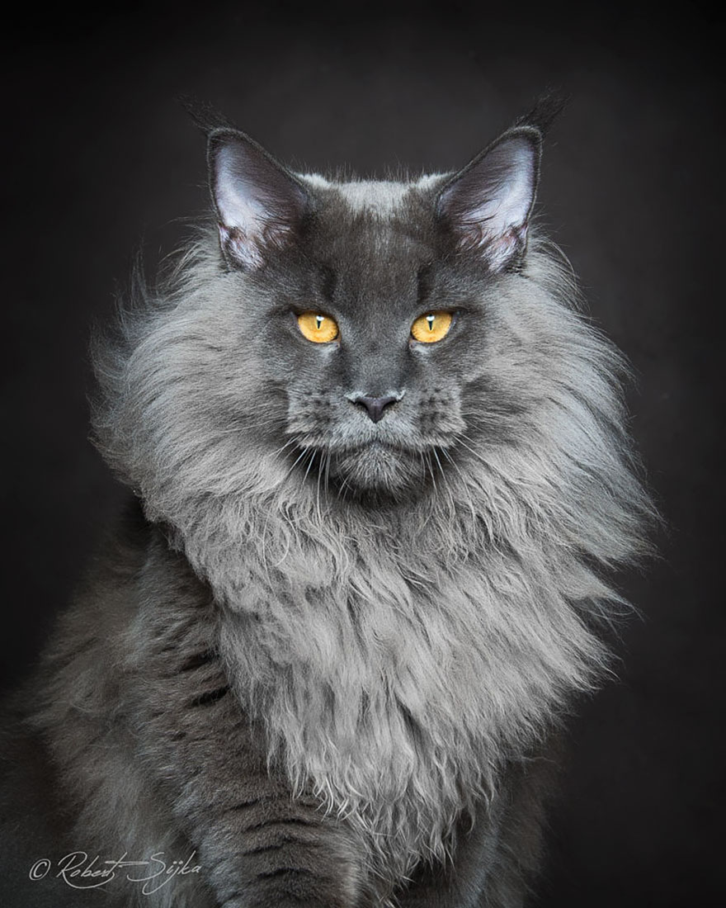
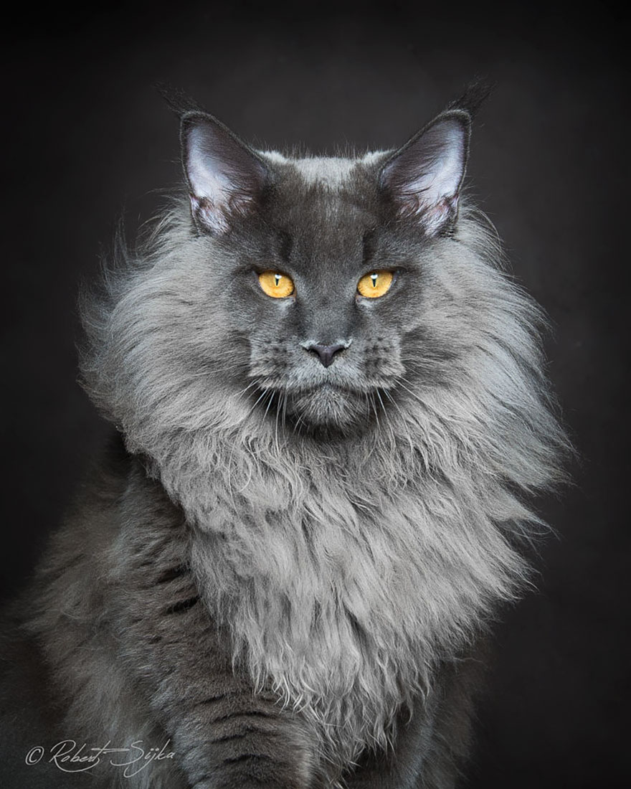

The maine coon is the oldest natural breed of domesticated cats in North America.
The maine coon is known for their supurb hunting skills, but they're still friendly and social creatures. Since they're
the largest non-hybrid breed, the males can be between 18-22lbs on average while females can be from 12-15lbs. They're highly valued as a breed
and because of that, they're price ranges from $400-$2000. They rose in popularity in America in the early 20th century.